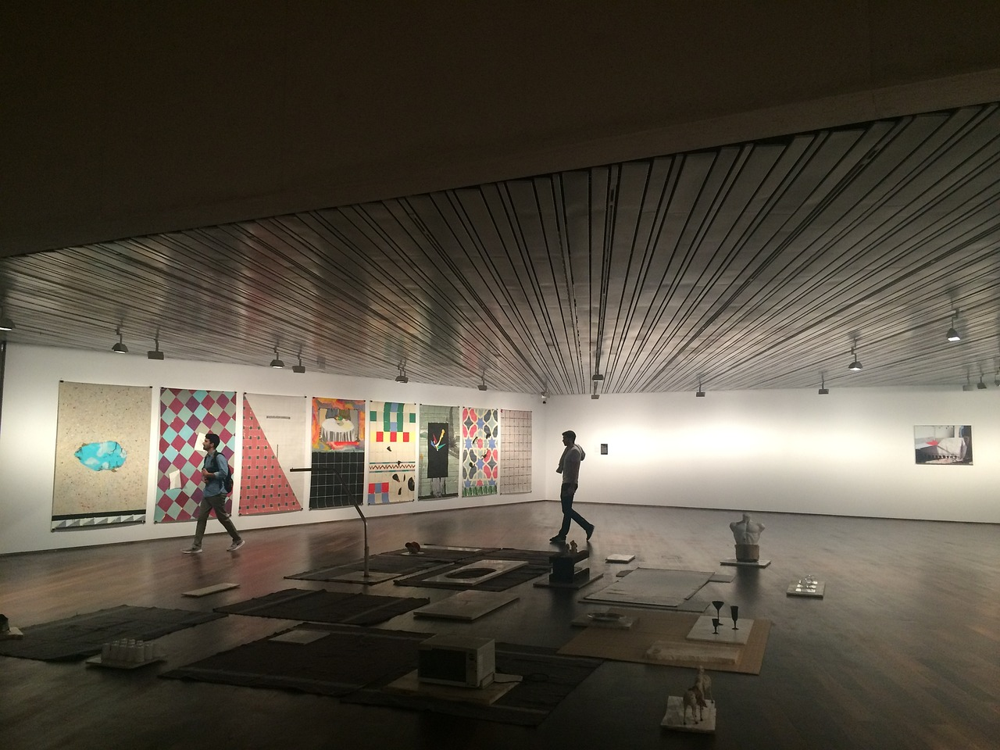

Historie eventů
Naše kavárna není jen o kávě je to i prostor pro setkávání, inspiraci a zážitky. V posledních měsících jsme hostili řadu výjimečných akcí, které spojily svět kávy s uměním a komunitou. Proběhla například výstava Valerie Lin, jejíž černobílé snímky zachycovaly tichou krásu městských momentů. V rámci vernisáže jsme nabídli speciální kolumbijský filtr a živou hudbu v podání Elizabeth Kopecké. V dětské mini-galerii se konal víkendový workshop kreslení pro děti, kde malí hosté malovali svou „vysněnou kavárnu“ výtvory jsou nyní vystaveny u dětského koutku. Děkujeme, že jste u toho byli s námi. Sledujte naše sítě další akce už se chystají!
